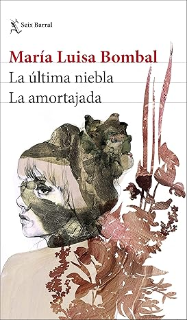

La última niebla
Las mujeres que formaron parte del boom latinoamericano a menudo quedaron invisibilizadas por sus compañeros escritores. Admirada por Borges, Carlos Fuentes y García Márquez, María Luisa Bombal es considerada la madre del realismo mágico y una reconocida influencia en Juan Rulfo. En su obra se vale igualmente de lo realista y de lo sobrenatural para explorar el mundo interior femenino, especialmente el deseo, en el contexto de la sociedad patriarcal de su tiempo. La presente edición recoge toda la obra narrativa de Bombal (las novelas cortas La última niebla y La amortajada, y los relatos «El árbol», «Trenzas», «Lo secreto», «Las islas nuevas» y «La historia de María Griselda») en una edición definitiva con portada e ilustraciones interiores de Paula Bonet y textos de Borges, Lucia Guerra y Pepe Bianco que arrojan luz sobre una escritora de vida y obra fascinantes que merece, sin lugar a dudas, un puesto de honor en la literatura del siglo XX.